はじめに
このガイドでは、StageNow を使用して、USB または SD カード ストレージから StageNow バーコード、NFC タグ、またはバイナリ (.bin) ファイルを選択して処理する方法について説明します。これによって、組織に必要な対象デバイスを構成したり、後で (エンタープライズ リセットの後など) 使用するためにデバイス上の設定プロファイルを保持したりします。
IMPORTANT:このガイドは、かならずプロファイルが 1 つ以上作成されてから使用してください。
関連項目:
- 信頼ありステージング ガイド | デバイスのセキュリティ保護とデバイスを構成する機能
- 動的ステージング ガイド | ステージング時のファイルからデバイス構成への値の挿入
- Android セットアップ ウィザードのバイパス | MX 9.0 以降が動作するデバイスに適用
デバイスのステージング
I. ステージング プロファイルを選択する
デバイスのステージングに使用するプロファイルを選択するには、次の手順を実行します。
ホスト コンピュータで、[スタート] メニューから [StageNow] アイコンを選択してワークステーション ツールを開きます。ステージング オペレータのホーム画面が表示されます。フィールドの説明については、「ホーム画面」を参照してください。
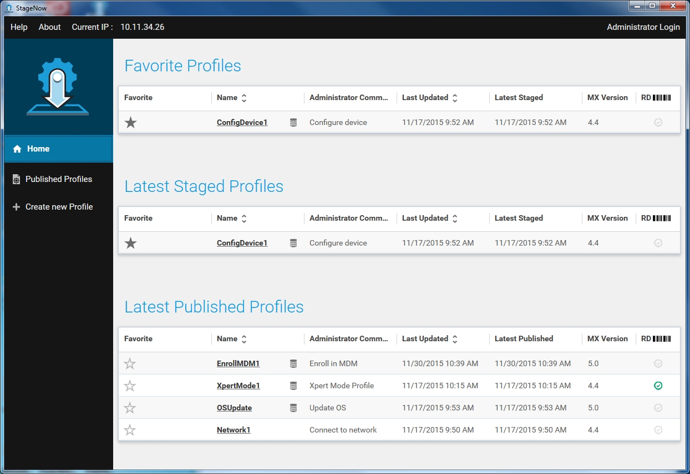
デバイスのステージングに使用するプロファイルを選択します。
II.ステージング メディアを選択する
バーコード、NFC、または USB/SD へのステージング
このステージング方法では、選択したプロファイルの構成情報をバーコード、NFC タグ、または USB/SD カード ストレージに書き込みます。ステージングは、出力がクライアント デバイスによって読み取られたタイミングで開始されます。
目的のメディア ([バーコード] または [NFC]) のタブを選択します。
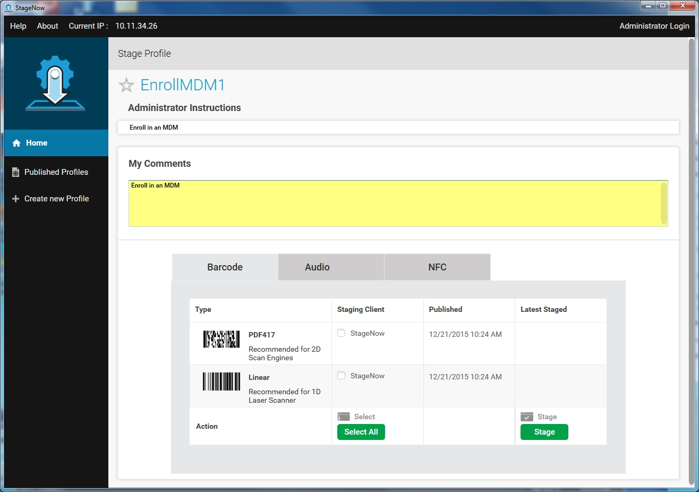
オプション: [自分のコメント] フィールドに、ステージングの開始時にステージング オペレータの画面に表示するコメントや特別な指示を入力します。
必要な出力タイプ (該当する場合) を選択するか、[すべて選択] を選択して、サポートされているすべての出力タイプを選択します。
[ステージ] を選択して、ステージング素材の PDF を生成します。
<img alt="image" style="height:350px" src=""/>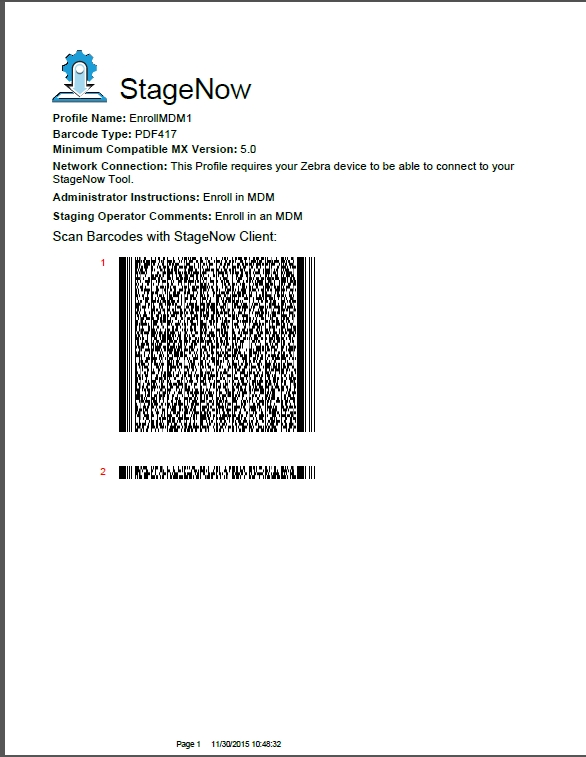
III.デバイスをステージングする
対象デバイスで、StageNow アイコンをタップして StageNow クライアントを起動します。
注: StageNow クライアントでは、バーコード データを読み取るために DataWedge プロファイルが必要です。ただし、DataWedge を復元すると、現在の StageNow 設定が破棄されます。DataWedge の復元後に StageNow でバーコードをスキャンできない場合は、デバイスで StageNow クライアントを終了して再起動します。
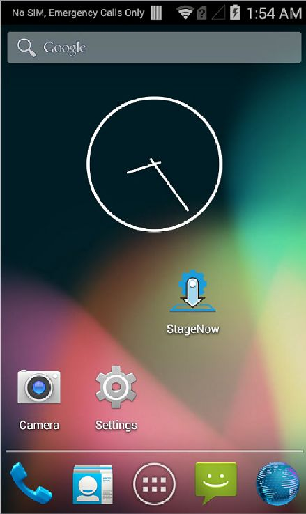
使用可能なステージング方法が一覧表示されます。
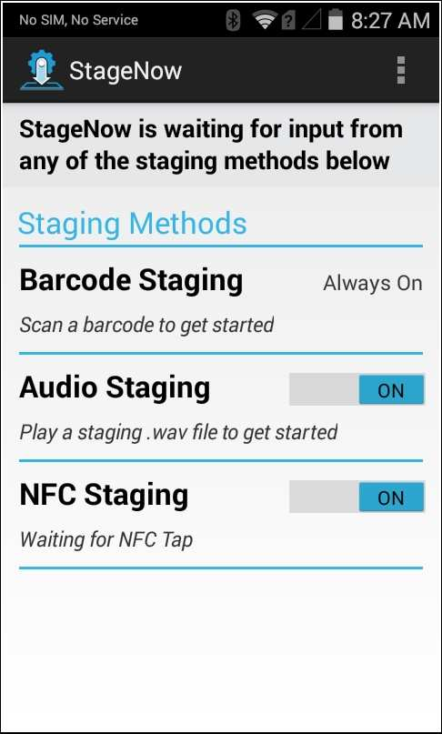
注: MC40 デバイスでは NFC をサポートしていません。
バーコード ステージング
選択したプロファイルをステージング バーコードを通してデバイスに導入するには、次の手順を実行します。
[バーコード ステージング] オプションは常にオンになっています。StageNow Workstation ツールから出力されたバーコードをスキャンします。
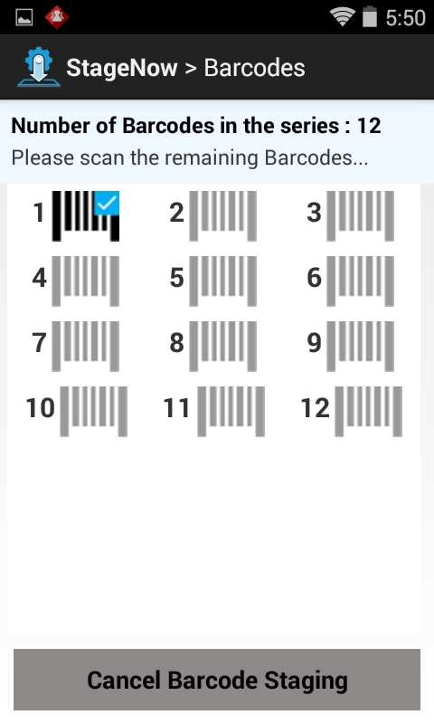
画面には、スキャンされたバーコード (チェック マークが付く) と、未スキャンのバーコードが表示されます。すべてのステージング バーコードのスキャンを続行します。導入が正常に完了すると、デバイスに次の画面が表示されます。
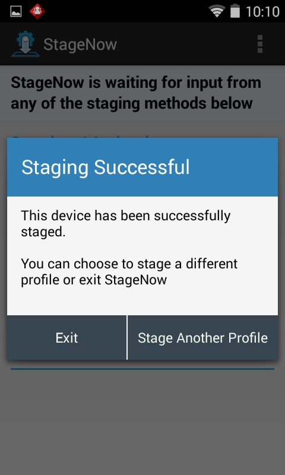
導入中にエラーが発生した場合は、次のポップアップが表示されます。[はい] を選択すると、トラブルシューティング用のログが表示されます。
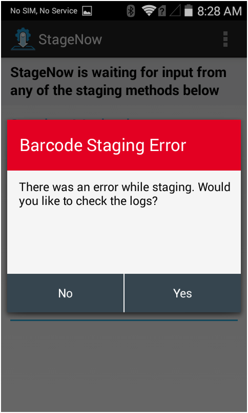
NFC ステージング
NFC ステージングを準備するには、StageNow Workstation ツールを使用して、ステージング手順を含む .bin ファイルを作成します。上記の手順を使用して、新規または既存のデバイス設定プロファイルから.bin ファイルを作成できます。.bin ファイルの作成の詳細については、ステージング プロファイル ガイドを参照してください。
要件
- NFC リーダーを装備した Zebra デバイス
- NFC カードをエミュレートする Zebra デバイス
エミュレーション プロセス
.bin ファイルの作成後、Zebra はステージングに NFC カード エミュレーションを使用することを推奨しています。プロセスの概要を以下に示します。詳細な手順については、その後のリンクを参照してください。
.binファイルを Zebra デバイスに転送します。- StageNow アプリのカード エミュレーション機能を使用して
.binファイルを開きます。 - そのデバイス (NFC カードをエミュレートしているデバイス) を、ステージング対象の 1 台以上の Zebra デバイスにタップします。
- ステージングの状況を確認し、エラーの有無を確認します。
詳細な NFC カード エミュレーション手順に進みます。
NFC タグを使用したステージング
ステージングするデバイスで StageNow クライアントを開き、[NFC ステージング] が有効になっていることを確認します。

デバイスをタッチして、プログラミングを完了した NFC タグに移動します。しばらくすると、次の画面が表示されます。

画面の指示に従って、ステージングの導入を完了します。
NFC ステージングが完了しました。
NFC リーダーが装備されていないデバイスの場合は、以下のUSB/SD カード ステージング手順を使用して .bin ファイルからステージングを行います。
USB/SD カード ステージング
StageNow では、NFC ステージング プロセス中に生成された .bin ファイルを使用して、USB ドライブまたは SD カードからデバイスをステージングすることができます。
USB ドライブまたは SD カードからデバイスを自動的にステージングするには、次の手順を実行します。
- NFC プロファイル ステージング手順を使用して、
.binファイルを生成します。 - USB ドライブまたは SD カード上に
/Stagenowというフォルダを作成します。 .binファイルを新しいフォルダのルート レベルにコピーします。- ストレージ デバイスを接続 (または挿入) し、ステージングする (新規またはエンタープライズ リセットされた) デバイスを起動します。
IMPORTANT NOTES:
- MX 9.0 を搭載したデバイスでは、すべての
.binファイルによって [セットアップ] ウィザードがバイパスされます。 - MX 9.1 以降を使用するデバイスでは、セキュリティ チェックにより、StageNow プロファイルが MX 9.1 以降を使用して作成された場合のみバイパスが発生するようになります。
- MX 9.1 以降を搭載したデバイスは、[Android セットアップ] ウィザードを自動的にスキップし、
.binファイルが見つかるとステージングを開始します。SUW バイパスの制限について
注: SD カードに保存されているステージング プロファイルは、USB よりも優先されます。
デバイス上のファイルからデバイスを手動でステージングするには、次の手順を実行します。
- NFC プロファイル ステージング手順を使用して、
.binファイルを生成します。 .binファイルをデバイス上の任意の場所にコピーします。- StageNow クライアントを起動し、[参照] ボタンをタップします。
- 手順 2 でコピーした
.binファイルに移動してタップし、ステージングを開始します。
USB ステージング詳細情報を参照してください。
StageNow エラー
クライアント メニュー
StageNow アプリで、ウィンドウの右上にある をタップし、メニューから [最後のステージング エラー] をタップします。
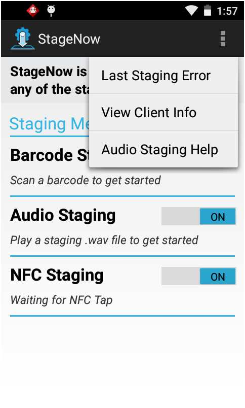
最後のステージング エラー
ステージングが失敗すると、下図のような画面が表示されます。トラブルシューティングを行うには、ログを確認して、ステージング失敗画面で [はい] を選択してエラーの原因を特定します。後からログを表示するには、StageNow クライアント メニューから [最後のステージング エラー] を選択します。
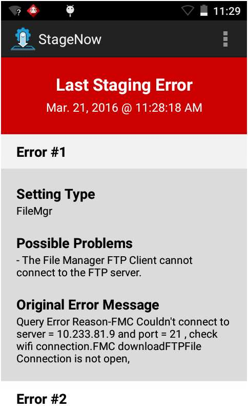
ヒント: ログの中のエラーを特定するには、ログの内容から characteristic-error または parm-error を参照してください。
注: [最後のステージング エラー] 画面には、ステージング操作でエラーが発生した場合のみ内容が表示されます。ステージング操作が成功すると、この画面は空になります。
ログ パス
ログ ファイルのパスを設定するには、メニュー アイコンを選択して [ログ パス] を選択します。
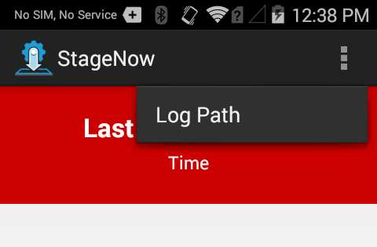
[ログ パス] ウィンドウが開きます。
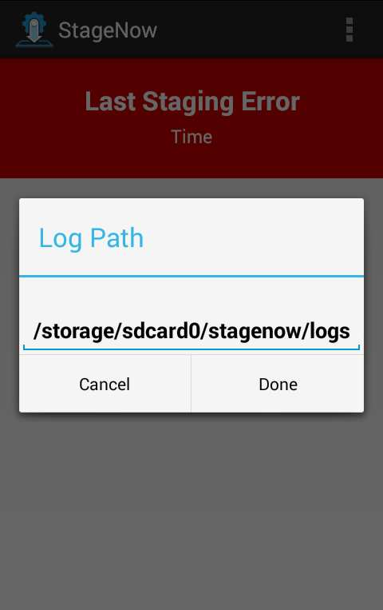
新しいパスを入力し、[完了] を選択してパスを更新するか、[キャンセル] を選択して既存のパスを保持します。
クライアント情報の表示
[クライアント情報の表示] を選択して、デバイスのソフトウェアのバージョン情報を表示します。
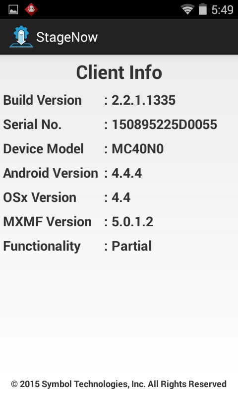
この画面を使用して、デバイスに StageNow の全機能があるか、一部機能しかないかを確認します。
全機能 - OSx のバージョンは MXMF のバージョンと同じである。
一部機能 - OSx のバージョンが MXMF のバージョンよりも小さい。その機能をデバイスがサポートしているかどうかを確認するには、特定の設定タイプの「機能の互換性」セクションを参照してください。
機能なし - OSx のバージョンなし。
ステージングの待機状態
ステージング中に次のポップアップ画面が表示されます。これは、デバイスが操作中であることや、操作が終了したらステージングは完了であることを示しています。
初期化
デバイスの再起動後、MX フレームワークなどの Zebra コンポーネントで、ステージングのための初期化と準備に 2 分ほどもかかることがあります。この間にステージングが開始された場合、StageNow クライアントに次のようなポップアップが表示されます。
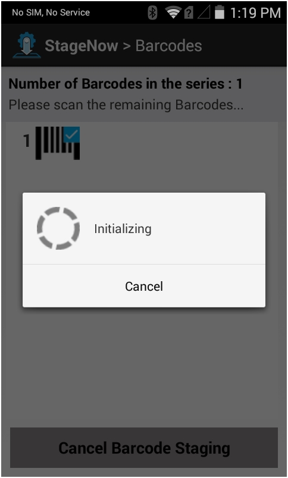
IP の取得
バーコードをスキャンしてイーサネット クレードルにデバイスを配置する際、ステージングで IP アドレスが必要な場合 (「スキャン & ドック」中など) に遅延が発生することがあります。デバイスが IP アドレスを取得し、StageNow ステージング サーバーからファイルをダウンロードするなどのネットワーク操作を実行するまで、ステージングが一時停止します。このような場合、下図のようなポップアップが表示されます。
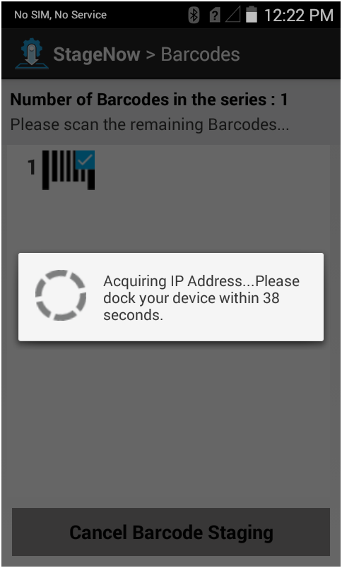
ダウンロードしています
次のポップアップは、クライアントがステージング プロファイルを処理中であることを示しています。このプロファイルには、ステージング サーバーからコンテンツをダウンロードするためのコマンドが入っています。通常、これは OS 更新パッケージがダウンロード中であることを示しています。
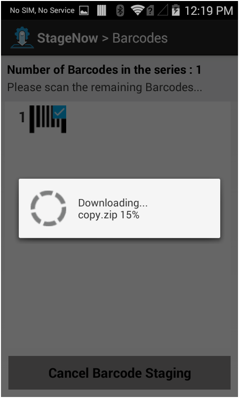